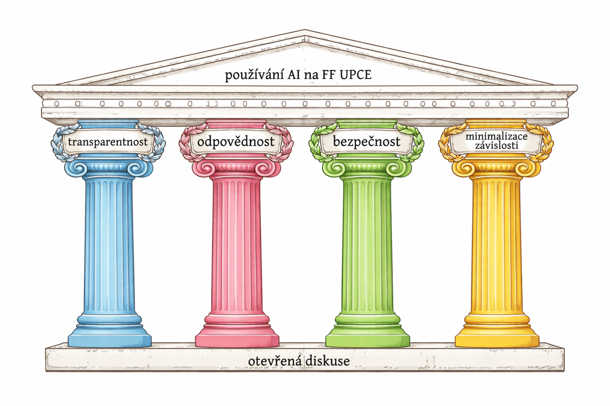

Default setting
Level 3
Framework use of AI applies unless a course or assignment specifies a different level.
An English quick preview of the Faculty of Arts and Philosophy, University of Pardubice approach to generative AI in study, teaching, assessment, and research.
Framework use of AI applies unless a course or assignment specifies a different level.
Higher AI involvement must be openly declared, starting with level 3.
Students and academics remain responsible for submitted or published outputs.
AI may support evaluation, but grades or feedback must not be based only on AI.
The policy is open to generative AI, but it frames use through academic integrity, learning value, and data-aware responsibility.

When AI is used, the use should be visible and described, much like work with sources.
Generated outputs need critical checking. The person presenting the work remains accountable.
Users should understand tool terms and judge what data can or cannot be uploaded.
AI should extend capability, not replace thinking, learning, or independent academic judgment.
The same values apply to both groups, but the practical obligations differ in study outputs, teaching, assessment, and publication.
The policy is not a blanket ban. The working rule is permissive unless a specific course, assignment, thesis supervisor, or directive sets stricter conditions.
The policy leaves room for AI in teaching and research, while keeping human responsibility for study materials, assessment, feedback, and publications.
The levels give teachers a shared vocabulary for assignments and give students a way to understand when AI crosses from ordinary support into declared collaboration.
Generative AI and AI-like support tools are not used for the task.
Text checks, correction tools, translation, and bibliographic search support.
AI as a consultant for structure, ideas, research orientation, and planning.
AI as an active partner in iterative writing or content development.
AI creates the work with little or no substantial human contribution.
The dashboard separates two questions: should the use be declared, and does it also need citation as generated material?
| AI use case | Declare? | Cite? | Course takeaway |
|---|---|---|---|
| Language correction, proofreading, ordinary stylistic checks | No | No | Usually comparable to common writing support tools. |
| Content support such as research orientation, structure, summarizing, idea exploration | Yes | No | Explain the AI role, especially from level 3 upward. |
| Direct adoption of AI-generated wording, images, code, data outputs, or other generated material | Yes | Yes | Treat it like generated source material and adapt the format to the required citation style. |
| Longer machine-translated passages included in submitted work | Context | Yes | Especially relevant when translations become part of the output, such as quoted passages. |
A compact version of the policy can become an assignment design tool rather than a compliance document.
Use these links when turning the preview into an official handout or course policy.
Based on the public FF UPCE page: Pouzivani umele inteligence (AI) na FF.
The dashboard uses two public visuals from the FF UPCE policy page for educational context: the AI-use illustration and the four-pillar policy graphic.